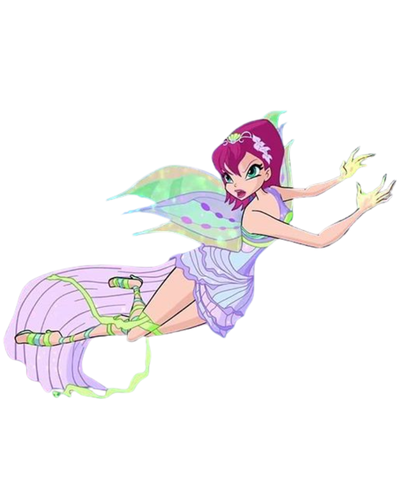

<!DOCTYPE html>
<html lang="pt-br">
<head>
    <meta charset="UTF-8">
    <meta name="viewport" content="width=device-width, initial-scale=1.0">
    <title>Glossário técnico</title>
    <link rel="stylesheet" href="style.css">
</head>
<body>
    
    </body>
    </html>

    <div class="capa">
          
        <h1>Bem vindo ao meu Glossário Técnico</h1>  
        <p><strong>Carregando conteúdo...</strong></p>  
         
        
        <div class="cena">
    
  </div>
    </div>

    

    <nav class="nav-bar">

        <div class="menu">
            <ul>
                <li><a href="css.html">Css</a></li>
                <li><span class="separador">|</span></li>
                <li><a href="html.html">Html</a></li>
                <li><span class="separador">|</span></li>
                <li><a href="java.html">JavaScript</a></li>
                <li><span class="separador">|</span></li>
                <li><a href="tut.html">Tutoriais</a></li>
                 <li><span class="separador">|</span></li>
                <li><a href="contato.html">Contato</a></li>
            </ul>   
        </div>
    </nav>

     <div class="container">
  <div class="tecna-lado">
    
    <div class="balao-lado">
      <p>Olá! Eu me chamo Tecna, sou a fada da tecnologia. Esse site oferece explicações claras e exemplos de uso para tags HTML, Java e propriedades CSS. Com descrição, foto, exemplos etc.  Esse site é inteiramente feito pela aluna Thaylla Nordt Das Neves, com design autoral, o site visa ser uma ferramenta prática e eficiente para consulta e aprendizado de conceitos essenciais para a criação de páginas web.</p>
    </div>
  </div>
</div>

<div class="linha"></div>

    <!-- <div class="container">
        
        <div class="fundo">
            <h1 class="bemvindo">Seja bem vindo ao glossário técnico</h1>
            <p>Esse site oferece explicações claras e exemplos de uso para tags HTML e propriedades CSS. Com descrição, foto, exemplos etc.  Esse site é inteiramente feito pela aluna Thaylla Nordt Das Neves, com design autoral, o site visa ser uma ferramenta prática e eficiente para consulta e aprendizado de conceitos essenciais para a criação de páginas web.</p>
        </div> -->
        
    </div>
    <div class="thay">
        
        <p class="sobre-mim">Me chamo Thaylla Nordt das Neves, mas sou mais conhecida como Thay. Tenho 17 anos e atualmente estou no 2º ano do ensino médio, em uma escola que também oferece o curso técnico em Desenvolvimento de Sistemas. Me considero uma pessoa criativa, curiosa e organizada, sempre buscando aprender coisas novas e dar o meu melhor em tudo o que faço. Gosto de explorar diferentes formas de pensar e me expressar, e adoro transformar ideias em realidade.</p>

        <div class="tecna">
            
        </div>

    </div>

    <div class="container">
        <div class="fundo2">
            <h1 class="bemvindoo">O que seria esses códigos de programação?</h1>
            <p><strong>HTML (HyperText Markup Language):</strong>

                HTML é a linguagem de marcação utilizada para criar a estrutura básica de uma página web. Com ele, você define os elementos principais de um site, como títulos, parágrafos, listas, links, imagens, formulários e outros. Em termos simples, HTML organiza e estrutura o conteúdo da página para que ele seja exibido no navegador. </p>

<br>

                <p><strong>CSS (Cascading Style Sheets):</strong> 
                
                    CSS é uma linguagem de estilo que permite personalizar a aparência de um site. Enquanto o HTML define a estrutura, o CSS cuida da estética: cores, fontes, espaçamentos, alinhamentos e layouts. Com CSS, você consegue tornar a página visualmente atraente, ajustando o design de forma eficiente e organizada, além de garantir que o site se ajuste a diferentes tamanhos de tela (como em dispositivos móveis).</p>

<br>

                    <p><strong>JavaScript: </strong>
                    
                        JavaScript é uma linguagem de programação que adiciona interatividade às páginas web. Enquanto HTML e CSS são usados para estruturar e estilizar o conteúdo, o JavaScript permite criar funcionalidades dinâmicas, como animações, atualizações de conteúdo em tempo real, validação de formulários, interações com o usuário e muito mais. Ele torna o site mais dinâmico e oferece uma experiência interativa aos visitantes.</p>
        </div>

    </div>

   

<footer class="rodape">
  <p>&copy; Site desenvolvido por Thaylla N. das Neves, com fins educativos.<br>Todos os direitos reservados.</p>
</footer>

</body>
</html>